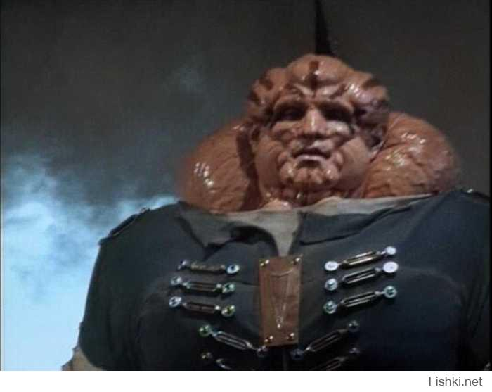
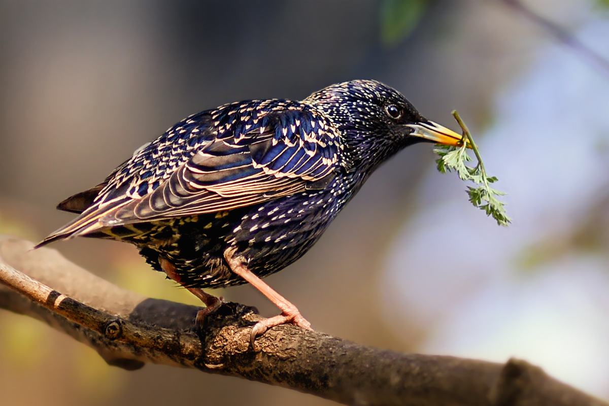
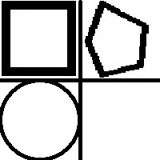

Включить в документ произвольный текст (не менее 300 символов) и с
помощью параметров тега задать обтекание текста вставленной
картинки слева.
Посмотреть результат в браузере;
С помощью тэга отменить обтекание части текста.
Посмотреть результат в браузере;

